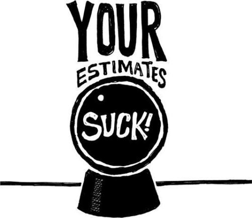

{% include JB/setup %}
{% raw %}
<div>

<h2 id="filepos131549" class="calibre19"><span class="calibre2"><a class="calibre13"></a><strong class="calibre14">Go to sleep</strong></span></h2><div class="calibre4"></div>
<p class="calibre7">Forgoing sleep is a bad idea. Sure, you get those extra hours right now, but you pay in spades later: You destroy your creativity, morale, and attitude.</p>
<p class="calibre17">Once in a while, you can pull an all-nighter if you fully understand the consequences. Just don't make it a habit. If it becomes a constant, the costs start to mount:</p>
<div class="calibre4"><blockquote class="calibre5"><span class="calibre6">
<p class="calibre7"><strong class="calibre22">Stubbornness:</strong> When you're really tired, it always seems easier to plow down whatever bad path you happen to be on instead of reconsidering the route. The finish line is a constant mirage and you wind up walking in the desert way too long.</p>
<p class="calibre11"><strong class="calibre22">Lack of creativity:</strong> Creativity is one of the first things to go when you lose sleep. What distinguishes people who are ten times more effective than the norm is not that they work ten times as hard; it's that they use their creativity to come up with solutions that require one-tenth of the effort. Without sleep, you stop coming up with those one-tenth solutions.</p>
<p class="calibre11"><strong class="calibre22">Diminished morale:</strong> When your brain isn't firing on all cylinders, it loves to feed on less demanding <a class="calibre16"></a>tasks. Like reading yet another article about stuff that doesn't matter. When you're tired, you lose motivation to attack the big problems.</p>
<p class="calibre11"><strong class="calibre22">Irritability:</strong> Your ability to remain patient and tolerant is severely reduced when you're tired. If you encounter someone who's acting like a fool, there's a good chance that person is suffering from sleep deprivation.</p>
</span></blockquote></div><div class="calibre4"></div>
<p class="calibre17">These are just some of the costs you incur when not getting enough sleep. Yet some people still develop a masochistic sense of honor about sleep deprivation. They even brag about how tired they are. Don't be impressed. It'll come back to bite them in the ass.</p>
<p class="calibre3"><a class="calibre16"></a></p><div class="calibre4"></div>
<div class="mbppagebreak" id="calibre_pb_74"></div></div>

{% endraw %}

